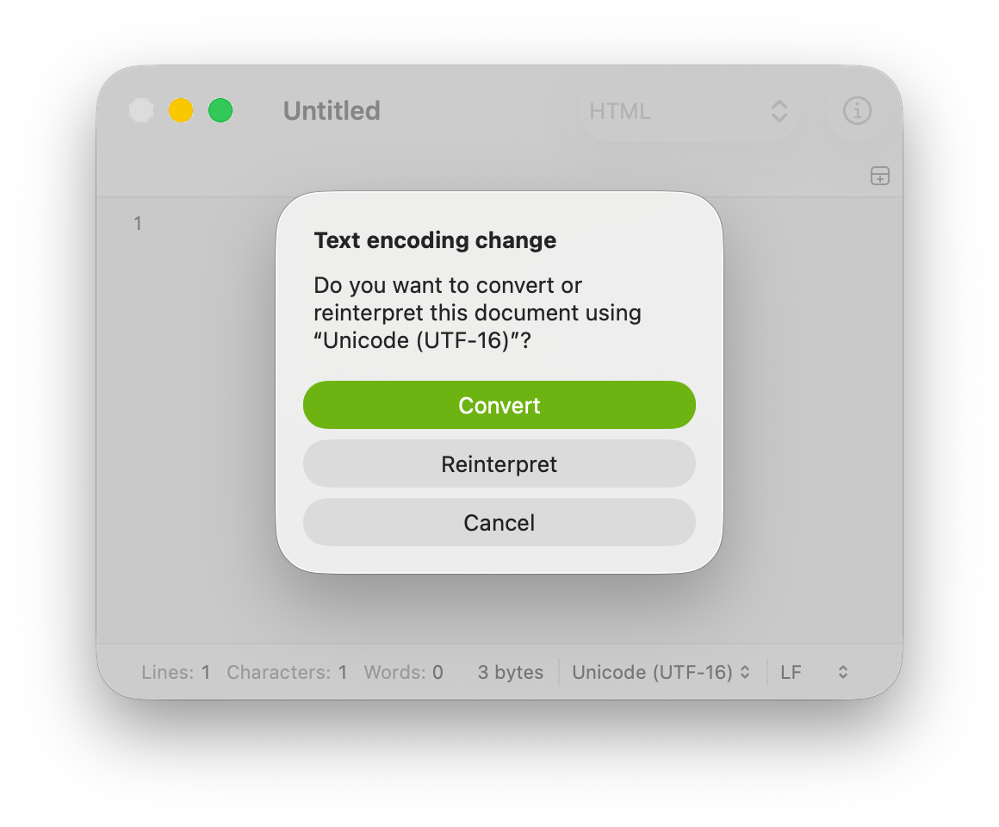

Change a document’s text encoding in CotEditor on Mac
CotEditor lets you change the text encoding used when saving a document.
Tip: If you don’t see the encoding you want in the Text Encoding menu, you may be able to add it by customizing the list. For details, see Change the priority of text encodings.
Change the default text encoding
To change the text encoding used for new documents you create in CotEditor, or when opening an empty document do the following:
Go to the CotEditor app on your Mac.
Choose CotEditor > Settings, then click the Format settings.
Change the “Default text encoding” option.
Change a document’s text encoding
In the CotEditor app on your Mac, open a document.
Click the Encoding button in the status bar, or choose Format > Text Encoding.
From the list, select the encoding you want to use.
If the document has never been saved, the encoding you selected is immediately applied.
When you change the encoding of a saved document, a dialog appears.

The options in the dialog are as follows:
Convert: Keeps the current text and changes the document so that it’s saved using the selected encoding.
Cancel: Cancels the operation. The document is not changed.
To change the document’s text encoding, click Convert.
If the document contains incompatible characters
If the document contains characters that can’t be represented in the text encoding you’re changing to, a warning dialog appears.
To continue with the change, click Change Encoding. The Warnings inspector opens, then you can see a list of characters that are incompatible with the new encoding. For more information, see Find characters incompatible with the document encoding.
 on your Mac.
on your Mac.